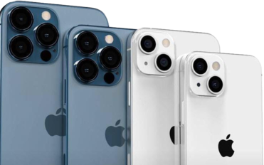

Models
Mini, Standard, Pro or Pro Max. Which do you choose?
Colors
Black, Blue, Pink. And more.
Apple ya ha puesto sobre la mesa su propuesta para conquistar el terreno de los móviles premium, los iPhone 13. Lo ha hecho sin demasiados cambios, sobre todo en los modelos no-Pro que, salvo porque ha cambiado la posición de las cámaras y el tamaño del notch, son casi indistinguibles de los iPhone 12 del año pasado.
Sin embargo, y a pesar de que los grandes cambios se han reservado para los modelos Pro, el iPhone 13 tiene mucho que decir: monta lo último de lo último en procesadores Apple, tiene el modo cinemático que tanto ruido ha hecho en redes sociales y mejora sustancialmente la autonomía. En Xataka ya lo hemos probado largo y tendido y esta ha sido nuestra experiencia.